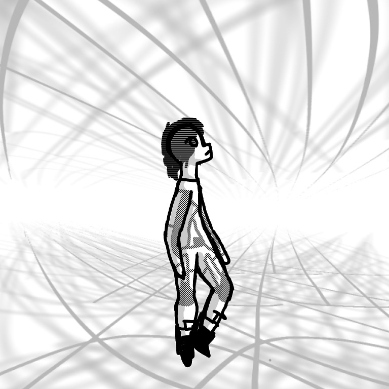
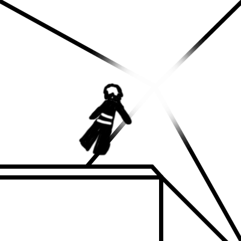
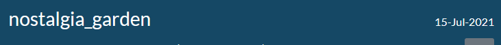
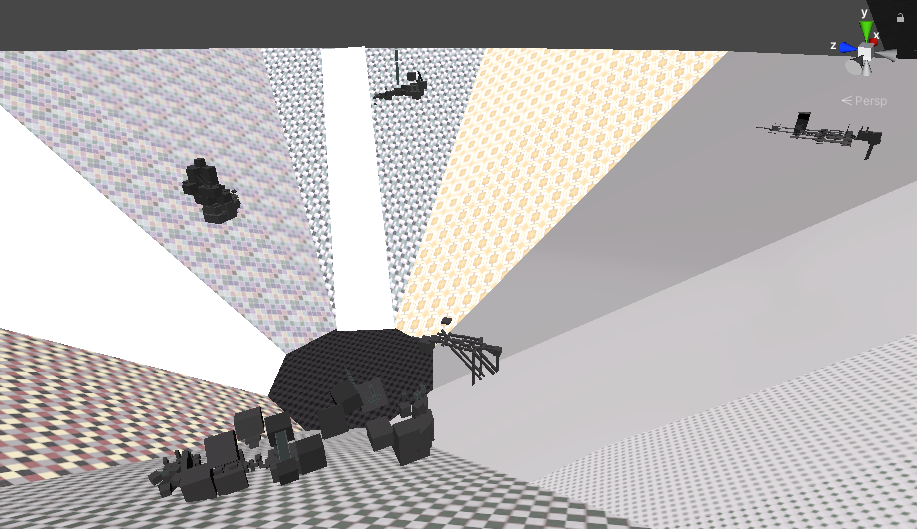
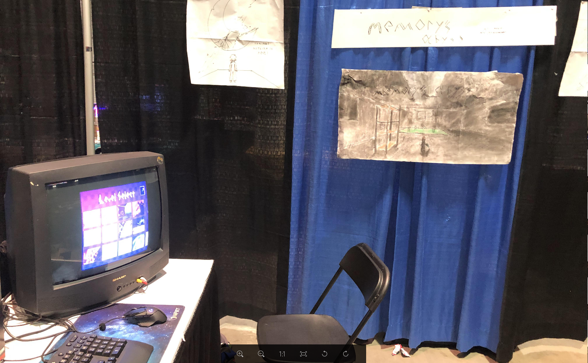
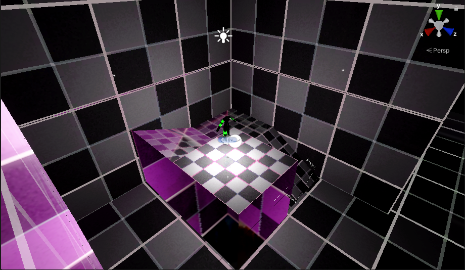
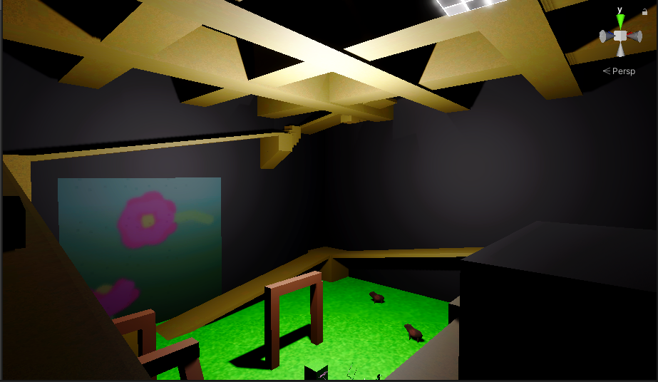
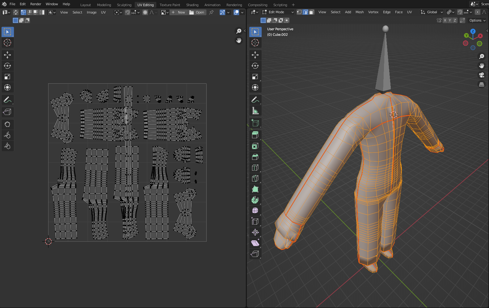
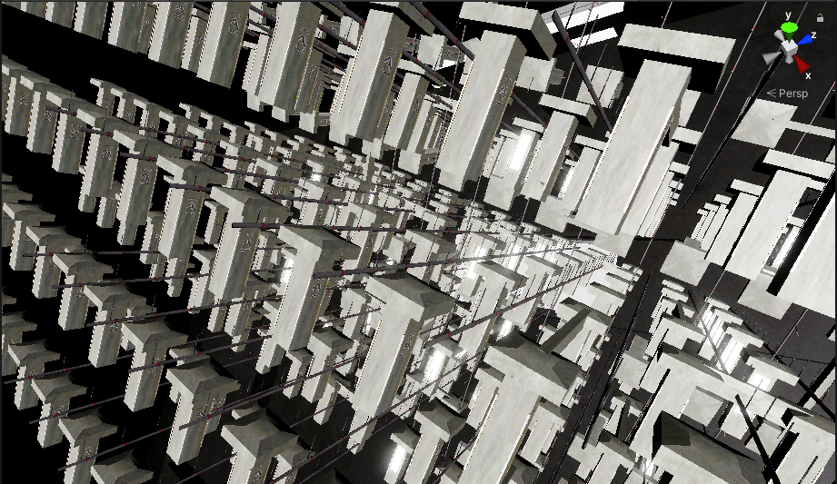
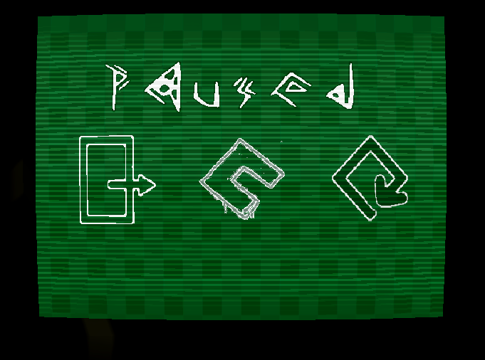

Memory's Abyss
summary
Memory's Abyss is a creative writing project and game series
following the story of a lost child in a computerized dream simulation.
The project has been the source of numerous games, artworks, creative
writing pieces, and concept journals since its beginnings in 2018.
history
august 2019

Bladesync, a simple multiplayer shooter for VR is developed in concept. It features two distinct red and blue cube-shaped blasters which, in combination with red and blue environmental pieces, add a portal-like puzzle element to a competitive genere

While developing the plans for this game in a tiny pocket notebook, I have a dream one night about an underground facility. This dream, labeled sector C, inspires the entirety of journal 1 of Memory's Abyss. Using the blaster concept previously mentioned, the game is reimagined as a singleplayer campaign set in a dream world.
may 2020
Months after the first journal, a game demo is released to youtube featuring two pogo sticks being used to jump around in VR. The point of this was to demonstrate a physics system where you could push against a surface and have an equal force applied backwards, something that was intended to be used with the blasters.
As is quite obvious from the video, I was not as strong a developer then to any extent. The whole thing was full of bugs. But hey, at least I had something to show the world.
This code, over a month later, would be used to make a simple climbing demo using the same system, just slightly more refined.
This project was scrapped, and a new demo wouldn't come out for a long time.
Meanwhile, it was nearing the end of the school year, and at this point I had nearly finished my second journal containing much of the modern storyline and game structure of Memory's abyss, some of which still stands at the time of writing this. There were(and still are) notes taken on my phone as well, mostly containing story elements and dream descriptions.
It's important to note that at this point the technical side of the project goes silent for almost an entire year at this point. Throughout 8th grade, I did a whole lot of learning. That's to say, I had a couple friends, and I was doing well in my classes.
Then we locked down for covid.
july 2021
After months of doing absolutely nothing, I finally decide to go back seeing as I had completely run out of things to do. With the help of my friend nyanomalous, the first Unity project(which is now the project of Memory's Abyss Chapter Zero) is created under the organization name "catboy devs". This organization would later be known as nostalgia garden.
december 2021
It took a lot of work but once I released it, I knew not a second had been wasted. Memory's abyss demo 1, aka Memory's Abyss: Limestone was released to itch.io(it is still available for download on the Chapter Zero page.) I'll admit, it was kind of janky, it had a weird rotation system and a weird music cutoff. You couldn't even reach the secret ending that was intended to be there. But it served well as a demonstration that I wasn't joking around about this game, that it would not die with the rest of my ideas.
june 2022
Half a year in development, the first version of Chapter Zero is released (this version is also available on the itch.io page.) It contains levels, movement types, and music that all tie together to tell the story I had been trying to plan for nearly a year.
Nobody played it, and I was fine with that.
What I was not fine with, however, was the burning feeling that the game was incomplete. So, over the course of a summer, I worked to update the project to with a new rendering system, new set of music, and a couple secret levels to really make it feel like a full game.
august 2022
I did it.
In celebration, I did what no depressed indie dev could ever dream of: I hosted my game at a convention. It was weird, my ragged old setup with a CRT monitor and a laptop running a game made by some 16 year old in a onesie. Most people couldn't even make it past the first level, to which I responded by updating the game in the middle of the convention.
But people were interested. I got over 12 people to sign up for a mailing list to the game, and to me that was amazing. 12 people thinking about my game?? That's a whole lot better than 1.
Additionally, I released my game to steam(completely for free.)
present day
At the time of writing this,
- 3 journals have been completely filled
- The game exists on steam and has a couple reviews
- Chapter One, the next installment of the series, has been in development for a couple months and is headed for, hopefully, another august release.
gallery
Prototype level used from limestone all the way through chapter 0's final release. This section of map in particular has been around since the very first update.

First level of Chapter 0.

Playermodel used in chapter 0(final release.)

A ridiculous, complex level inspired by my Backrooms project.
